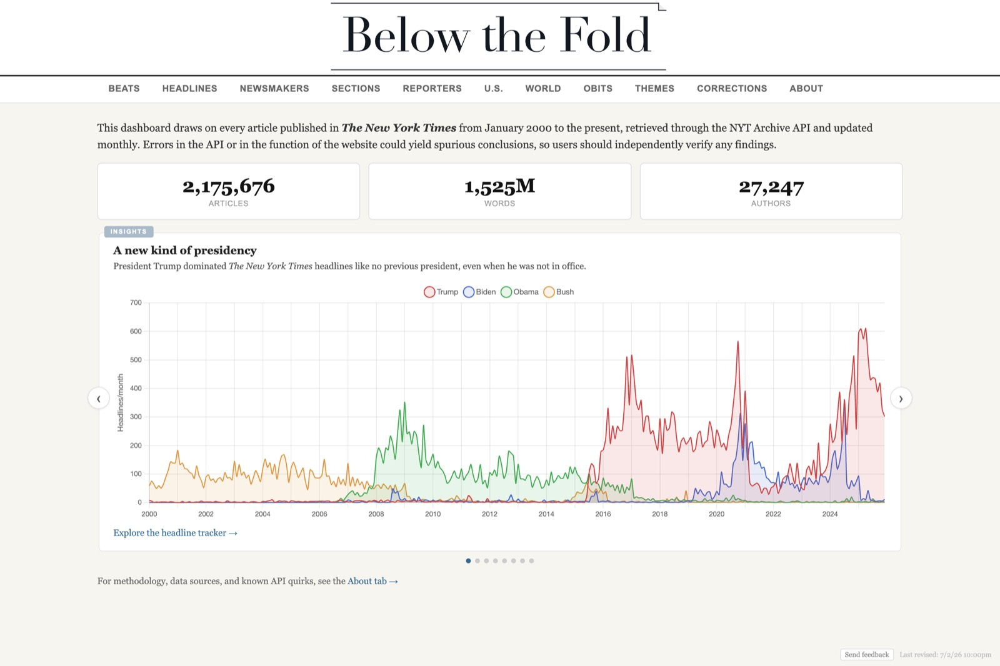
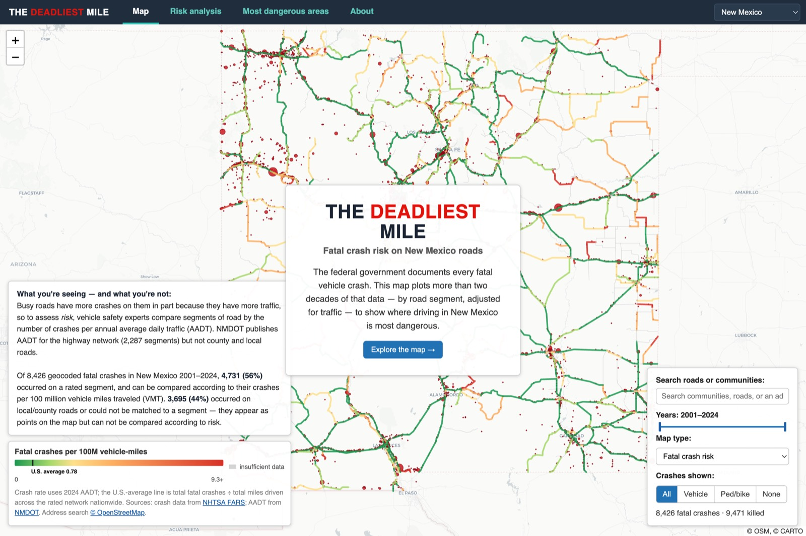
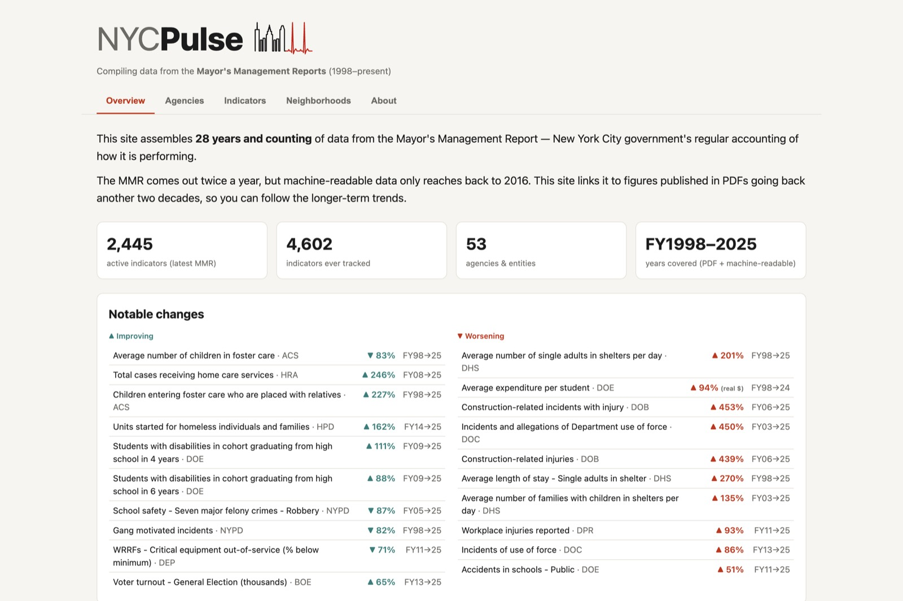
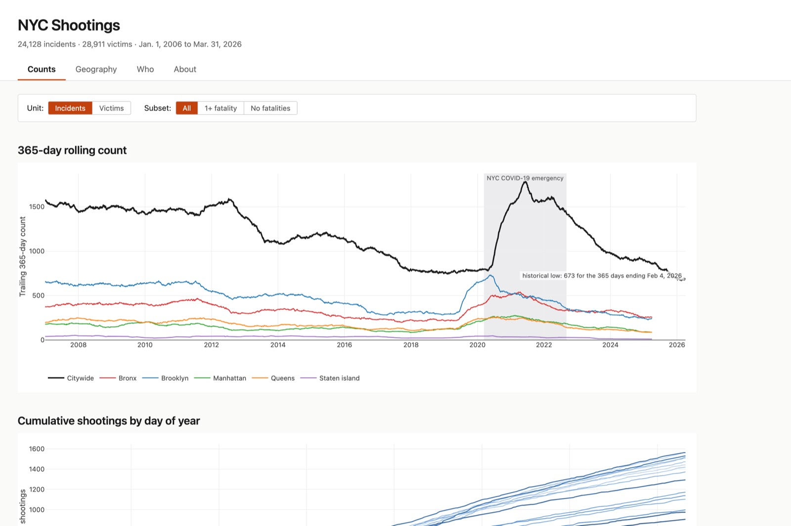
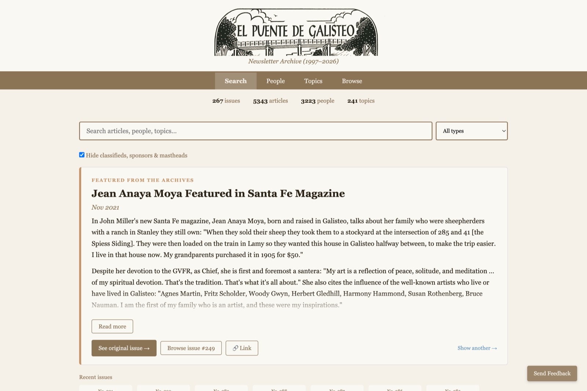
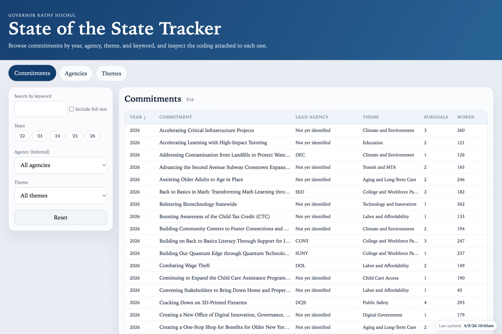

Below the Fold
What The New York Times covers — every story catalogued and measured, updated nightly.
Interactive data projects, reported, built, and maintained by hand.

What The New York Times covers — every story catalogued and measured, updated nightly.

The risk of dying on every stretch of American road, built from federal crash records. All 50 states.

Three decades of the Mayor's Management Report — every metric New York City keeps on itself, explorable.

Every shooting in New York City, mapped over time.

A village newspaper, saved: 264 issues and 5,262 articles of El Puente de Galisteo (1997–2024), digitized, indexed, and searchable.

Every promise in the New York governor's State of the State addresses, tracked.